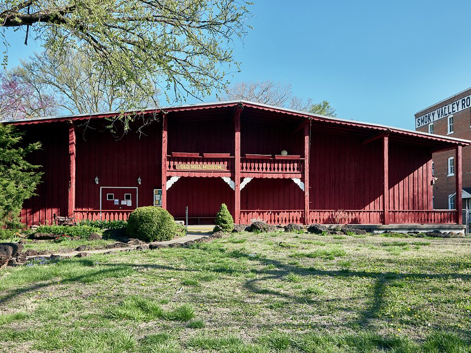

Lindsborg · Victorian B&B
Rosberg House
An 1885 Queen Anne Victorian B&B in town.
Official details for Rosberg HouseLittle Sweden on the prairie and Eisenhower’s hometown.
Two charming small towns sit on either side of Salina. Lindsborg celebrates its Swedish roots with painted dala horses, bakeries and the Birger Sandzén Memorial Gallery. Abilene, an old cattle-drive town, is home to the Eisenhower Presidential Library and the Gilded Age Seelye Mansion.

Time illustration: direct distance at 150 KTAS plus 15 minutes for departure and arrival, matching the discovery page. Use ForeFlight for your actual flight plan.
KSLN, Salina Regional, is a towered airport with a long runway, about 25 minutes from Lindsborg and 30 from Abilene.
Salina Regional Airport, Salina, KS
Confirm FBO hours, fees and ground transportation. No live fuel price is shown.
Plains weather: strong winds, spring and summer thunderstorms (this is tornado country) and fast-moving winter systems. About 960 nm from Myrtle Beach: a long cross-country day with two fuel stops. Plan four or more nights, or break the trip with an overnight on the way.
Rates and availability need travel dates.
An 1885 Queen Anne Victorian B&B in town.
Official details for Rosberg HouseAn 1887 Victorian home with six rooms and a chef-made breakfast.
Official details for Abilene’s Victorian InnFormerly the Swedish Country Inn, with Swedish furnishings and a breakfast spread.
Official details for Dröm Sött InnReserve weekend dinners.
Scandinavian-inspired cooking and cocktails.
Official details for Crown & RyeA casual pub known for Swedish-inspired sandwiches.
Visit Lindsborg for Öl StugaThe inn’s Swedish-style breakfast buffet is open to the public.
Official details for Dröm Sött breakfastTwo towns, two days.
This prototype links to the local visitor site. It does not yet match events to your travel dates.
Lindsborg’s Swedish heritage festival.
Hyllningsfest for Svensk HyllningsfestA Swedish holiday tradition.
Visit Lindsborg for St. Lucia FestivalMild weather.
Check the local calendar when choosing a weekend, and confirm dates and tickets with the organizer.
A sample long weekend: Little Sweden and Eisenhower. This is a long flight; plan four or more nights. No bookings or availability confirmed.
A day trip isn't practical from the Southeast; this is a long-flight destination.
Drive to Lindsborg.
The Sandzén Gallery and Coronado Heights.
Land at KSLN, subject to weather, your fuel stops and your actual flight plan.
Drive to Lindsborg.
Dinner in Lindsborg.
The Sandzén Gallery and Coronado Heights.
Drive to Abilene.
Dinner in Abilene.
The Eisenhower Library and Seelye Mansion.
Allow time at the airport.
A long trip east; start early and plan your fuel stops.
The Sandzén Gallery and Coronado Heights.
Drive to Abilene.
Dinner in Abilene.
These details make the difference between an appealing list and a usable getaway.
Lodging first.
About 955 nm. Plan two fuel stops and four or more nights.
About an hour apart via Salina.
April to October.
Picks and links reviewed by WingAway Weekends. Hours, prices, menus and availability change often, so confirm directly with each place before booking. Spotted something out of date, or have a favorite we missed? Email us at hello@wingawayweekends.com.
WingAway Weekends helps you discover the destination. Use ForeFlight and current official aviation information for route, performance, weather, NOTAMs and preflight decisions. Flight planning and PIC responsibility stay with the pilot.
One fly-in weekend, a Fly to Lunch pick and the newest guides, about once a month.
Free. Unsubscribe anytime.